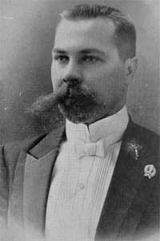

Зміст
"Сніп": український часопис для інтелігенції» — щотижнева українськомовна газета, виходила у Харкові в 1912—1913 роках з ініціативи та за редакцією Миколи Міхновського, коштом Михайла Біленького[1]. У самому виданні зазначено, що видавцем є Микола Міхновський, а Михайло Біленький є редактором[2].
З газетою співпрацювали Іван Франко, Леонід Пахаревський, Христина Алчевська, Микола Сумцов, Костянтин Бич-Лубенський та інші. Сама редакція знаходилась на вулиці Конторській, у будинку № 21[3]. Наклад кожного номера складав близько 1500 екземплярів. З лютого всі охочі могли придбати «Сніп» не лише у Харкові, а й у Києві, Одесі, Катеринославі, Полтаві та Херсоні[3].
Часопис висвітлював українське політико-культурне життя в російській імперії.
Дозвіл на друк часопису було отримано 8 грудня 1911 року, майже через рік після звернення до харківської інспекції у справах друку[4]. Перший номер вийшов 1 січня 1912 року Наприкінці 1912 року було оголошено про закриття часопису через фінансові труднощі, останній номер вийшов 30 грудня 1912 року (12 січня 1913 року).
Тижневик об'єднав навколо себе українську опозицію в Харкові перед Першою світовою війною[3].
Всього вийшло 52 числа видання.
Історія
Заснування
Перший номер вийшов 1 січня 1912 року (14 січня 1912 року). Відсутність часопису українською мовою в слобідській Україні стала однією з причин до заснування часопису. За декларацією редакції Сніп мав висвітлювати громадсько-політичне та культурне життя українців з позиції їх національних інтересів, засуджуючи нав'язану російську культурну та духовну політику[5].
Тематика та автори
Часопис відрізнявся критичним ставленням до російської національної політики у відношенні до українців. Порушували питання представництва українців в російському та австрійському парламенті. Висвітлювали питання виборів до IV Думи, а також розкривали погляди європейських політиків на українське національне питання. Після результатів виборів до Думи редакція констатувала створення «української фракції»[5].
За сприянням головного редактора Миколи Міхновського часопис зазначав матеріали про руйнацію української культури та духовної сфери в російській імперії.
У висвітленні подій сучасного життя розміщувались статті про квітневий панслов'янський з'їзд та заходи організаторів, які перешкоджали українськомовним виступам на ньому. Економічні складнощі українців на Далекому Сході та асиміляційні заходи російської імперії у відношенні до українців. Містились також публікації-заклики про недопустимість українців в політико-військових інтригах[5].
«досить вже того, що на цілу слобідську Україну нема ні одної часописі української, щоб неминуча потреба в такій часописі була очевидною[5]» — з редакційної статті «Снопа» від 1 січня 1912 року
Політологічні статті дописували Леонід Пахарський (під цим псевдонімом писав Костянтин Бич-Лубенський) цикл нарисів «Дагеротип». Статті Леоніда К. «Нация та асиміляція», П. Тимохвієнка «російські прогресісти й українська справа», П. Кушніра «Національно-культурне будівництво й наші відносини до ліберальних москалів». У 22 числі «Снопа» редакція запропонувала дискусію та коментарі з приводу денаціоналізації та патріотизму в Україні. 37 числа опублікована відповідь на автора під псевдонімом д. С. Р-ка., у числі 51 підсумовуючи дискурс автор стверджує, що громадськість так і не надала відповіді чому українці перебувають в культурному занепаді[6].
Економіка висвітлювалась в контексті міграції та переселення українців. Публікувались критичні статті про доцільність переселення до Сибіру та Далекий Схід. Зокрема, О. Мицюк у статті «Переселення (З української точки погляду)» стверджував, що практика спільних поселень українців з іншими народностями не несе економічного та морального результату[6].

Микола Міхновський
Михайло Біленький
Редакція часопису також публікувала педагогічні матеріали Агатангела Кримського, Д. Ткаченка, Григорія Бабенка, Григорія Коваленка. В питані освіти редакція відстоювала принцип цілеспрямованого виховання, яке залежало також від свідомості вчителя. Застерігало від надмірного фольклорного наслідування в освіті
Етнографічні матеріали представленні статтями під псевдонімами М. К. «Українська старовина й її охорона», Онук «Зімового довгого вечора: Моїй старенькій бабусі» або без підпису «В справі українських народних ігр та танців».
Літературознавчі огляди й розвідки публікували Іван Франко, Христя Алчевська, Степан Писменний, Архип Тесленко, І. Кутовий, Микола Плевако та інші. Дописувалась й мистецькознавча тематика: Леонід Пахарський, С. Дрімченко, Василь Ємець, Сергій Васильківський та інші.
Окремо публікувались ювілейні матеріали, зокрема серія публікацій про Миколу Лисенка. Часопис також розміщував галерею партерів видатних громадсько-культурних діячів України.
Серед літератури розміщувались поетичні твори Христини Алчевської, Мусія Кононенка, Івана Мечиславченка, Володимира Самійленка, Олекси Слісаренка, В. Тащі, Івана Франка, О. Черниш, Антона Шабленка та інших. Проза представлена Д. Дудикиним, Леонідом Пахарським, Олелько Островським, К. Цвинтарним. Розміщено також переклад Альфонса Доде «Джіакози».
Географія дописів читачів широка: Сибір, Петербург, Львів, Ізюм, Лебедин тощо.
Рубрика «З нашого життя» подавала новини, некрологи, передруки з інших видань які стосувались сучасного життя українців в різних частинах проживання російської імперії та Австро-Угорщини.
Газета неодноразово зазнавала штрафів. Зокрема Харківська судова палата у розпорядчому засіданні Кримінального департаменту 24 жовтня 1912 року заслухала пропозицію прокурора щодо накладення арешту на № 41 газети «Сніп». Водночас судді не знайшли підстав для арешту на вказаний номер журналу, а також визначили необхідність зняття арешту номера. 12 грудня 1912 року харківський губернатор наклав штраф у 500 рублів на редактора видання із заміною на арешт на 60 днів у разі несплати. Штраф Михайло Біленький не заплатив та був оголошений у розшук поліцією. Але ні в Харкові, ні в Харківській губернії його не було.
Стягнення на редактора журналу «Сніп» Біленького мною накладено найвищою мірою тому, що журнал «Сніп» ведеться взагалі у протиурядовому напрямку та за так званою «Мазепинською» програмою з метою порушення ідей про автономію України. Олександр Погорілко
Подавались також відгуки про українські друковані новинки. Реклама розміщувалась на першій та останніх сторінках[7] (влітку, коли «Сніп» виходила здвоєними числами, оголошення вміщалися на 16 сторінці)[2]. Тижневик подавав анонси українських періодичних видань з російської та Австро-Угорської імперій. Також друкував повідомлення про виступи українських акторів: трупи Трохима Колесниченка, трупи Володимира Суходольського. З іншої реклами розміщувались пропозиції магазинів, готелів, будівничо-технічних закладів, майстерень подавалися на першій чи останній, восьмій сторінці. Всі повідомлення друкувались українською мовою.
Закриття
Редакція регулярно сплачувала цензурні штрафи за свої політичні погляди в статтях, які не відповідали політиці російській імперії. В останньому числі редакція наголошувала, що закриття «Снопу» обумовлено економічною скрутою видання.
Відгуки сучасників
Впродовж кількох наступних років у західноукраїнських періодичних виданнях можна було зустріти схвальні відгуки та посилання на харківський часопис. Євген Чикаленко вважав, що якби газета Миколи Міхновського мала консервативний характер, «то й адміністрація не дивилась би на неї скоса, та й публіка не боялась би її передплачувати».
Значення
Вихід «Снопа» засвідчив процес політизації та радикалізації українського культурно-національного руху на Слобожанщині перед Першою світовою війною. Тижневик об'єднав навколо себе українську опозицію в Харкові[3]. «Сніп» залишив помітний слід в українській періодиці, про це свідчить, зокрема, той факт, що наприкінці 1990-х років XX століття на Слобожанщині було відроджено видання часопису під такою ж назвою
Посилання
«Сніп» (1912 рік) . eScriptorium